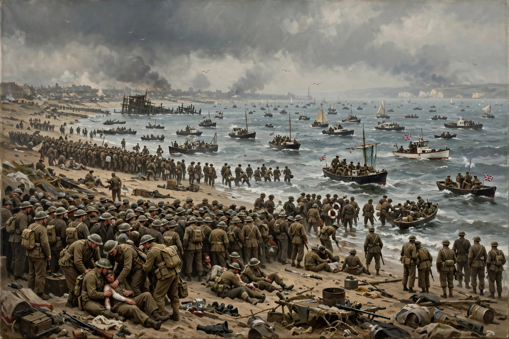

Dunkirk (French: Dunkerque) is a port city in the Nord department of northern France, near the Belgian border on the Strait of Dover. It is famous for the evacuation of Allied soldiers during the Second World War in May–June 1940.

Dunkirk originated as a Flemish fishing village — its name means 'dune church'. It was repeatedly contested by France, Spain, England and the Netherlands, and was sold by England to France in 1662. Privateers such as Jean Bart operated from its port.
In 1940, German forces trapped the British Expeditionary Force and French troops around Dunkirk. In Operation Dynamo, a flotilla of naval vessels and civilian 'little ships' — among them the paddle steamer Medway Queen — evacuated about 338,000 soldiers to England between 26 May and 4 June 1940.
The city was heavily bombed and liberated in 1945. Today it is France's third-largest port, known for its carnival and maritime museum. The evacuation was depicted in Christopher Nolan's 2017 film Dunkirk.